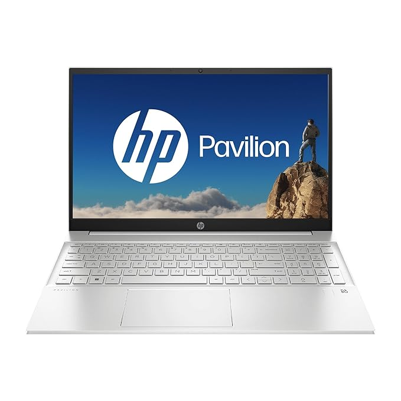

Features
Brand: HP
Model Name: 15-eg2091TU
Screen Size: 39.6 Centimetres
Colour: Natural Silver
Hard Disk Size: 512 GB
CPU Model: Core i5
RAM Memory Installed Size: 16 GB
Operating System: Windows 11 Home
Special Feature: Bright View, FHD, Backlit Keyboard, Micro-Edge Display, Numeric Keypad
Graphics Card Description: Integrated
About this item
【12-core 12th Gen Intel Core i5-1240P】16 threads and 12MB L3 cache deliver superior performance with fast processing speeds. Immerse yourself in vivid visuals with the Intel Iris Xᵉ graphics.
【Long battery life】Power up your device up to 50% in 45 mins with HP Fast Charge. The durable 41Wh battery limits restrictions and enables you to take on more work at a stretch.
【Business conferencing】HP Wide Vision 720p HD camera empowers you to collaborate seamlessly and elevates your video calling experience with temporal noise reduction and audio
【Pre-loaded Win 11 and MS Office】Comes with Win 11 and MS Office 2021. To activate your MS Office, sign in or sign up, and follow the Office Activation Wizard.